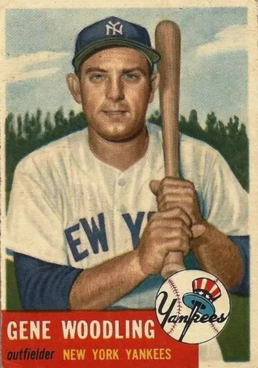

Gene Woodling "Old Faithful"
Career Highlights & Facts
(Facts are AI-generated and may require verification)
- Contributed to 5 consecutive championship titles.
- Led the league in on-base percentage during a championship season.
- Earned a high compliment from a legendary hitter for being the toughest opponent in late-inning situations.
Would you like to find out more about Gene Woodling?
Player Biography
Gene Woodling January 4, 2012 / in BioProject - Person 1950s All-Stars / by admin This article was written by Jim Sargent By the time he retired from the National League’s New York Mets after the 1962 season, Eugene Richard “Gene” Woodling had accumulated a number of honors, including batting over .300 five times in his seventeen seasons. Although averaging .284 lifetime, he was best known as a dangerous hitter with runners in scoring position during the late innings. Most importantly, Woodling helped the New York Yankees win five straight World Series from 1949 through 1953. During those fall classics, the left-handed hitter averaged an impressive .318. His 27 postseason hits included five doubles, two triples, and three home runs. A native of Akron, Ohio, the youngest son of Harvey and Alvada Woodling was surrounded by Ohio’s football-rich tradition. Gene played football and basketball in high school, but he came from a family known for good swimmers. His older brother “Red” won a national title while swimming for Ohio State University. Gene believed training to be a first-class swimmer and being a tough competitor helped him make the big leagues. During his senior year, East High’s swimming coach also became the baseball coach, so Gene was persuaded to try the diamond. In the Midwest, few schools played as many as twenty games in the often-chilly spring weather. Still, Cleveland scout Bill Bradley saw enough of Woodling to sign him. A tough clutch hitter, Woodling made the major leagues to stay only after leading four different minor leagues in hitting. He began his professional career in 1940 at Mansfield of the Ohio State League. The “recruit” (as rookies were often called) led the Class D circuit with a .398 mark and made the All-Star team. He continued to shine in 1941. At Flint of the Class C Michigan State League, he paced the hitters with a .394 mark. But the next year at Class A Wilkes-Barre of the Eastern League, Gene broke his ankle sliding into home plate. The injury ended his season after 39 games, when he was averaging just .192. Returning to the Barons in 1943, he led his third league with a .344 mark. During a stint with Cleveland in late 1943, he batted .320 in eight games. Then World War II interrupted Woodling’s life–as the war did to the lives of millions of Americans. Following the 1943 season, he enlisted in the Navy and was sent to the Great Lakes Naval Training Station in North Chicago. He was recruited for Mickey Cochrane ‘s Great Lakes team, which included major league stars such as Bob Feller , Johnny Mize , “Schoolboy” Rowe , and Billy Herman . “I actually gained a lot that one year,” Woodling explained in a 1997 interview, “by playing with these guys in 1944.” He added, “Mickey Cochrane said, ‘If you lose, you go overseas!’ We won something like 50 or 60 games. We didn’t lose any.” Woodling wound up in Hawaii in late 1944. He was stationed not far from Pearl Harbor, along with many Navy recruits and athletes, including ballplayers like Virgil Trucks , who became a close friend. Both played in the Army-Navy Service “World Series” in Honolulu in September 1944. The Navy swept the first six games and finally won eight while losing two and tying one. In early 1945, the Navy organized two all-star teams to tour the western Pacific islands and entertain sailors and soldiers. The Navy big guns included Detroit’s Virgil Trucks and Barney McCosky , Washington’s Mickey Vernon , Cincinnati’s Johnny Vander Meer , Philadelphia’s Pinky May , and Brooklyn’s Pee Wee Reese . The teams played several games on over half a dozen islands before the players resumed their military duties. Woodling finished the tour on Saipan, where he saw combat action. In January 1946 he was mustered out of the Navy. Returning home, he went to spring training with Cleveland in Clearwater, Florida. “I led every minor league I was in in hitting,” Woodling recalled in 1997, “and when I got to the big leagues, they said I couldn’t hit. I had a real good spring training in 1946. But when the season started, I sat on the bench all year. Then they traded me to Pittsburgh for Al Lopez .” He batted .188 in 150 plate appearances for the Indians. In 1947 the Pirates optioned Woodling to Newark, a Yankee farm club in the Triple-A International League. Keeping his positive attitude, Gene hit .289, contributed 54 RBI, and led all flychasers with 343 putouts. Called up to Pittsburgh in September, he hit .266 with 10 RBI in 22 games. It still wasn’t enough. The Pirates sold him to the San Francisco Seals of the AAA Pacific Coast League in 1948. “I would have to say that was my biggest break there, going with San Francisco and [manager] Lefty O’Doul . That ball club operated a lot better than the major league clubs. Paul Fagan owned the ball club, and he was a very, very wealthy man. We actually traveled with our own airplane. It was a good league. You played a week in a town, and had every Monday off. He flew us back home all the time for our families. San Francisco operated better than three-fourths of the major league clubs.” Woodling credited O’Doul with helping him get back to the majors: “Lefty O’Doul, you know, he just couldn’t believe that I didn’t stay in the big leagues after spring training. We got to fooling around in the batting cage, and he moved me up close to the plate, feet together, and changed the position of my bat. When I went back with my bat, I had to go down in that crouched stance. “That’s where it all started. When I began playing ball, I batted standing straight up. I could only hit .398, .394, and .385 standing up. That wasn’t good enough! ‘We got to change something,’ Lefty said. ‘They don’t like you in the big leagues the way you are.’ So we made some changes.” Woodling burned up the Coast League at a .385 pace and won the batting title. His 202 hits included 22 doubles, a league-leading 13 triples, 22 homers, and a career-best 107 RBI. The Sporting News selected him Minor League Player of the Year. Woodling remembered, “Well, I had a heck of a year out there. I hit around .385, and the Yankees bought me. The Yankees offered three or four ballplayers, plus $100,000. In 1948, that was a lot of money for baseball. A year later in 1949, after we won the pennant and the World Series with the Yankees, San Francisco sent me 10 percent of my purchase price. God, I never saw so much money! I got a World Series check of about $7,000, and I got $10,000 from San Francisco. “You couldn’t beat the treatment we got in San Francisco. The owner was great, and Seals Stadium was a beautiful ballpark. My wife said they had the cleanest rest rooms of any she saw in ballparks in my whole career.” In 1949 the Yankees hired a new manager, Casey Stengel , who had managed Oakland in the PCL in 1948. “I think I hit about .900 against his club,” Woodling said, chuckling. “Yeah, Casey got a good view of me. He probably had a lot to do with me coming to the Yankees. The Yankees did nothing but win, so everything worked out great. The first five years I was with New York we won pennants and World Series.” The Yankees trailed the Boston Red Sox by one game with two games left to play in the 1949 season. Gene recalled, “ Johnny Lindell hit the big home run. Boston came in to New York, and Boston had to win one, but we had to win both games. And we won ’em. Then we went on and won five World Series in a row. “I thought that was the way it was supposed to be! Then the year Cleveland beat us [in 1954], they won 111 games, and we won more than we ever won, 103 games. You could win pennants in those days with 92 or 94 wins. That’s what broke our streak. I think what really did it was that Cleveland beat Boston 21 out of 22 in 1954. Of course, Cleveland was always good competition, because of the pitching, you know. They had four starters that would win 20 ball games. You knew who was going to pitch. We had Allie Reynolds , Vic Raschi , Eddie Lopat , and Whitey Ford . And they had Feller, Early Wynn , Mike Garcia , and Bob Lemon . That’s pretty good pitching!” Asked why he hit so well against Cleveland, Woodling replied, “I don’t know why. This is my home, of course. I was born in Akron. It’s always nice to come back home and do well. I hit exceptionally well in Cleveland Stadium when I was with Cleveland, and when I was against them. It was my best ballpark. And you can’t find the reasons why, because you try to hit everywhere. It just happened, and against good pitching. “There’s no way in the world you can figure out hitting, no way in the world. There is no such thing as a hitting coach teaching someone how to hit. You know who does that for you? The Man upstairs. If He says you’re gonna hit, you’ll hit until you’re 100. If He doesn’t, you gotta go home and go to work. But there’s no two hitters who hit alike when they go to home plate. There’s no two hitters who do the same things. There’s just no way. It’s a God-given talent.” With the talent-heavy Yankees from 1949 through 1953, the intensely competitive Woodling became a championship player. Averaging 394 at-bats per season, his five-year figures featured a .291 batting average, 66 runs scored, and 59 RBI, plus he led the league in on-base percentage in 1953 with a .429 mark. An excellent glove man, he led American League outfielders in fielding percentage in 1952 and 1953 with a record of .996 both years. Asked about Casey Stengel platooning him with Hank Bauer during the Yankee years, Woodling said, “Casey only platooned us in about seven games a year. Nobody ever checks the records. You know what he’d do? We’d get a five-game lead, and Casey would platoon us. We’d get down to a tie or one or two games ahead, we’d play every day. Hank told him that one day. Hank said, ‘How come every time you get a lead, you platoon us. Then when we get down close, we play against everybody?’ Actually, that was no big deal. Casey got a lot of publicity out of it, but the press overplayed that.” But some teammates recalled him screaming at Stengel when his name was left off the lineup card. Peter Golenbock wrote in Dynasty, “During one clubhouse meeting, Stengel said, ‘There’s one guy in this room who don’t talk behind my back.’ All the Yankees turned and looked toward Woodling.” Gene said, “I was the left fielder, and Hank was the right fielder. Joe DiMaggio was in center when we first went there, and then Mantle came. They used to call Hank and I the ‘Gold Dust Twins.’ Some writer put that on us. That sort of became a little bit of a gimmick for Hank and I. We had very similar careers, except that I played longer than Hank.” Reflecting on his favorite World Series, Woodling observed, “They’re all a great thing. You never get used to the World Series. But I guess the one year, 1952, when we played the Brooklyn Dodgers, we had to go back to Ebbets Field and win ’em both to win the World Series. And we went over there and won ’em both in their ballpark. I would have to say that’s the most thrilling one.” Woodling, who batted .348 in that Classic, also contributed a seventh-game solo homer to help the Yankees win, 4-2 , and clinch the club’s fourth straight World Series title. In the 1953 World Series, the Yankees beat the Dodgers in six games. Gene homered to lead off the fifth game at Ebbets Field, which was an 11-7 New York victory. He recalled, “I hit one off of Johnny Podres leading off to dead center. In Yankee Stadium , they’d have been running in after the ball! “Yankee Stadium was a big, big ballpark, except for down the lines. But down the lines don’t mean nothing. You hit the least amount of balls down the line in a year’s time. Right-center and left-center is where you hit most of the balls. “The big difference between my day and today, as you can see, is pitching. Did you ever see so many runs scored? In my day, you couldn’t get enough good pitching for 16 big league teams. And now [1997] you’ve got 30 teams.” While the Yankees had good hitting and good pitching, Woodling, who hated to lose, reflected, “You have to have good pitching to win. But the thing we really never got credit for was our speed and our defense. We were outstanding. I think one year a writer compiled that we hit into 88 less ground-ball double plays than any other team in the league. And you realize what double plays do? They take you right out of innings. We could all run. “When the writers used to question Casey on stealing bases, he would say, ‘Why do we want to steal bases and take the bat out of the hitter’s hand?’ Casey used to say, ‘There’s nobody on my ball club that doesn’t go from first to third on a base hit, or from second to home. Every time you steal a base, you’re taking a gamble on getting thrown out, and taking the bat out of the hitter’s hand.’ We didn’t have to do that. The percentage is against you, and we had the hitters. And in our day with the Yankees, you never used the words, ‘Nice hustle.’ That was an insult. You’re supposed to run hard all the time. And we did. So you didn’t say that to one of our ballplayers. That was an insult. We played hard, and that’s the reason we won. “There were only twelve of us that stayed through the five-in-a-row, you know. Besides me, there’s only six left [in 1997], Yogi Berra , Phil Rizzuto , Hank Bauer, Jerry Coleman , Bobby Brown , and Charlie Silvera . Since we’ve been out of baseball, we’ve been very close.” The other Yankees who played in five straight World Series were Johnny Mize, Joe Collins , Vic Raschi, Ed Lopat, and Allie Reynolds. After suffering an off-season by hitting .250 in 1954, Woodling was traded to seventh-place Baltimore. The 17-player deal featured himself, shortstop Willie Miranda , and catcher Gus Triandos . The principals going to New York included right-handers Bob Turley and Don Larsen . “I went down to Baltimore in 1955,” Woodling said, “and streaks can hit you bad. Yankee ballplayers were supposed to be like DiMaggio, you know, but I wasn’t ever like DiMaggio. Lo and behold, [in Baltimore] I was getting only one base hit a week. That don’t go over too good with fans, and they booed me. “June 15 was trading deadline, and [manager] Paul Richards said, ‘I better get you outta here before they kill you!’ So he traded me over to Cleveland. And don’t you know? The next week I started hitting! You can’t figure these things out. But the writers, they crucified me in Baltimore, they really did. They said I didn’t want to play there, and this stuff. “After three years at Cleveland, you know what happened? Paul Richards traded back for me. He had the guts of a burglar, to bring me back in that town. But that turned out to be the best thing that ever happened to me. I had three real good years for Baltimore. In fact, I consider 1959 my best year.” Woodling averaged an even .300 with 14 round-trippers and 77 RBI in 1959, after hitting .275 with 15 home runs and 65 RBI in his first full season with the Orioles. His peak RBI figure came with the Indians in 1957, when he slugged a personal-best 19 homers and batted in 78 runs. Explaining why 1959 — the only year in which he made the All-Star team — was his best year, Woodling observed, “I had good years at New York and Cleveland. But we look at good years different than most people. Everybody looks at batting averages, RBIs, and all that. I use an example. Would you rather have a guy hit 40 home runs and drive in 110 runs, and his RBIs probably won you 10 or 11 ball games? Or would you rather have a guy who hits .260 or .270, and drives in, say, 60 runs, and 30 of his runs won ball games? Who would you rather have?” Woodling was inducted into the Baltimore Oriole Hall of Fame, confirming that his Baltimore years were his best in baseball. Woodling believed he produced more game-winning RBI in 1959 than any other season. Also, his career statistics illustrate he had little problem handling the late-inning or big-game pressures: “See, that was my key thing. In the eighth or ninth inning, I won ball games. I’ve got a picture here from Ted Williams , who I played against for years, who said I was the toughest guy that he ever played against in the eighth or ninth inning. That’s what Ted wrote on my picture. That’s the nicest compliment I ever received from a great hitter. Nobody hit with Williams, nobody. I treasure that compliment, coming from Ted. He played against a hell of a lot of ballplayers!” Asked whether Ted Williams was the greatest hitter, Woodling replied, “DiMaggio was a great ballplayer. There’s nothing wrong with the way DiMaggio hit at all. But he wasn’t as good a hitter as Williams. I’m not knocking DiMaggio. DiMaggio was a tremendous all-around ballplayer, no question. But to get down to that one thing, hitting, it was Williams. When you talk about players like that, you’re talking about a fine line anyway.” Ranking Mickey Mantle with DiMaggio and Williams, Woodling concluded, “You know, Mantle had the greatest ability of any guy who ever came to the big leagues in my time. He didn’t have to apply himself. He didn’t realize how good he was, is what I’m trying to say. There’s nothing wrong with the career Mantle had. If he’d have been a little more on determination … like DiMaggio. DiMaggio was a very determined guy, you know. Mantle could have set unbelievable records. He only used about three-quarters of his talent. Mantle’s the only guy in baseball who could bunt one-hop to the pitcher and beat it out. He did that many times. “You know what I used to say? You ought to make Williams hit with one hand, and make Mantle run with one leg!” In 1961, when Woodling was drafted by the new Washington Senators, he wasn’t surprised: “They were making expansion teams, and they had to have bodies. My Navy buddy, Mickey Vernon, was the manager. Mickey should be in the Baseball Hall of Fame. This guy got buried in Washington. He was one of the best first baseman ever, defensively. He was an outstanding baserunner. Everybody looks at the bat. But he was probably one of the best all-around first basemen that’s ever played baseball. He could really play. If Mickey would have been with the New York club, he’d have been automatic in the Hall of Fame.” Under Vernon’s tutelage, Woodling enjoyed a good season and a half in Washington, hitting .313 for the Senators in 1961 and .280 for 40 games in 1962, before he was sold to the Mets. “Don’t forget, I helped the Mets lose 120 games,” Woodling remarked. “Casey was funny over there. He wasn’t funny on the other side, with the Yankees. Bauer and I wanted to kill him. But with the Mets, I got a lot of laughs with Casey! He was probably the best public relations man that baseball ever had. He had a crowd of writers around him all the time. But Casey was a good manager, a good manager. He did win five in a row with the Yankees, and I don’t think that will ever be broken.” Regarding the Mets, Woodling said, “Casey just made the statement, ‘None of you guys are going in [the Hall of Fame] individually, but as a team, you’re a cinch!’ Casey had the right idea about the Mets. He said everyone was either too young or too old…. Richie Ashburn [.306] had a good year that year, and Gil Hodges [.252], Frank Thomas [.266]. I had a good year, too [.274 in 81 games]. But nobody could catch the ball, and nobody could pitch! Roger Craig lost 24 games that year and probably pitched the best baseball that he pitched in his career. He looked like a traffic cop out there, if you got to the eighth or ninth inning with a one-run lead. But I was almost 41 years old. It was time for me to go home anyway.” After baseball, Woodling was a sales representative for several companies, including Diebold, Dayton Lock, and Eaton Corporation. Also, his farmland near Medina, Ohio, allowed him to make good profits. “Baseball may have gotten me in the door,” he said, “but I did a good job for these companies, and I worked for Eaton for years. The Good Lord took care of me. We count our blessings, too. During the last eighteen years we’ve lived about as nice a life as a retired ballplayer could live. We have three healthy children, so we’ve had a pretty nice life.” Gene, who married childhood sweetheart Betty Nicely in 1942, observed, “I’m very, very pleased with the career I had. I never broke any records, but I had a good, steady career, and it lasted a long time. I wouldn’t trade it for all the tea in China. Would I want to go back today? No way. I played during the best years.” A championship-caliber clutch player, Gene Woodling performed in excellent fashion throughout his career, even though he was overshadowed by more famous teammates such as Joe DiMaggio and Mickey Mantle. Still, Woodling’s contributions to five straight World Series winners are part of a team record that was matched by only eleven other ballplayers–all of whom were his teammates with the New York Yankees. Sources Interview with Gene Woodling, May 6, 1997. Woodling suffered a crippling stroke on December 9, 1997, and he was not able to speak again. He passed away on June 2, 2001. Peter Golenbock, Dynasty: The New York Yankees, 1949-1964 . Englewood Cliffs, New Jersey: Prentice-Hall, Inc., 1975. Woodling’s statistics, including his minor league record, are in the Baseball Register for 1963. Also see: Baseball Encyclopedia . New York: Macmillan Publishing, Ninth edition, 1993, and Baseball America, Inc. The Encyclopedia of Minor League Baseball , second edition, 1997. The Baseball Hall of Fame’s Library has a good clipping file on Woodling, including a variety of newspaper stories as well as Jack Newcombe’s “The Yankee They Take for Granted,” Sport , XIV (Feb. 1953), pp. 26-27, 87-90. Paper of Record has a number of newspapers archived and indexed, including The Sporting News from 1886-2003. See: http://www.paperofrecord.com/default.asp Photo Credits The Topps Company Full Name Eugene Richard Woodling Born August 16, 1922 at Akron, OH (USA) Died June 2, 2001 at Barberton, OH (USA) Stats Baseball Reference Retrosheet Oral History If you can help us improve this player’s biography, contact us . Tags 1950s All-Stars · Share this entry Share on Facebook Share on X Share on LinkedIn Share on Reddit Share by Mail
Career Totals
| WAR | AB | H | HR | BA | R | RBI | SB | OBP | SLG | OPS | OPS+ |
|---|---|---|---|---|---|---|---|---|---|---|---|
| 33.3 | 5587 | 1585 | 147 | .284 | 830 | 830 | 29 | .386 | .431 | .817 | 123 |
Statistics via Baseball-Reference.com
The Original Clue